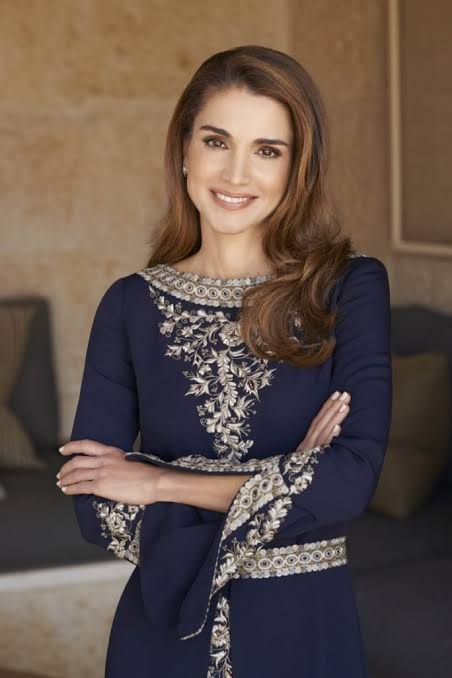

"Queen Rania Al-Abdullah"
Rania Al-Abdullah (Arabic: رانيا العبد الله) born Rania Al-Yassin on 31 August 1970) is the queen consort of Jordan. The daughter of a Palestinian couple, her father being from Tulkarm in the West Bank,[1] she was born in Kuwait. She received her bachelor's degree in business at The American University in Cairo. In 1991, following the Gulf War, she and her family fled to Amman, Jordan, where she met the then-prince Abdullah. Before meeting him, she worked at Citibank and then took a job in the marketing department at Apple.[2] Since marrying the now King of Jordan in 1993, she has become known for her advocacy work related to education, health, community empowerment, youth, cross-cultural dialogue and micro-finance